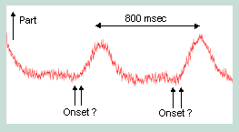
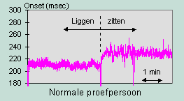
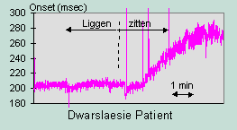

RF 2, Onset Systolische Bloeddruk
|
Achtergrond
Bij patienten met een dwarslaesie werken bepaalde terugkoppel-elementen in de regeling van de bloeddruk niet goed of onvoldoende. Om deze regelmechanismen beter te doorgronden is de afdeling Fysiologie geïnteresseerd in de aansturing van de eigenschappen van het arteriële vaatbed. Een van de parameters die iets zegt over de status van het arteriële vaatbed is de latentietijd tussen de R-top in het ECG en de onset van de bloeddruk in de periferie. Het bepalen van de R-top levert geen probleem. Het volautomatisch bepalen van de bloeddruk onset is echter een lastiger probleem.

Probleem
De vol-automatische bepaling van de bloeddruk onset wordt gekenmerkt door de volgende specifieke problemen: grote laagfrekwent component
grote laagfrekwent component aanzienlijke hoeveelheid ruis
aanzienlijke hoeveelheid ruis fenomeen is asymetrisch
fenomeen is asymetrisch bepalen nulde afgeleide is storingsgevoelig
bepalen nulde afgeleide is storingsgevoelig wavelet vóór de onset is sterk variant
wavelet vóór de onset is sterk variant artefacten (b.v. bij beweging)Principe Oplossing
artefacten (b.v. bij beweging)Principe Oplossing
Duidelijk is dat de opgaande helling van het bloeddruk signaal wel goed te bepalen is. Omdat deze helling behoorlijk steil is, kan de onset nauwkeurig bepaald worden door de bepaling van het snijpunt van deze helling met een goed gekozen horizontale lijn ter hoogte van de diastolische druk. Weliswaar zal de echte onset iets eerder optreden doch de geïntroduceerde fout geeft slechts een constante afwijking.
Praktische Uitwerking
De helling wordt bepaald door het berekenen van een lineaire regressie, welke wordt gestart op 15% van het begin en welke door loopt tot 85% van de top. Dit bereik garandeert enerzijds dat de curve voldoende lineair is en anderzijds wordt de maximale hoeveelheid informatie benut waardoor een optimale ruisonderdrukking wordt bereikt. De diastolische druk wordt bepaald door het lokale minimum te bepalen van het gefilterde druksignaal in de periode voorafgaand aan de helling. Daarnaast worden een aantal JBF algoritmen gebruikt om resterende artefacten te onderdrukken.
Resultaat
Het algoritme, uitgevoerd in MIDAC, werkt volautomatisch. De latentietijd wordt met een nauwkeurigheid beter dan 5 msec en in de meeste gevallen zelfs beter dan 2 msec.

© Instrumentele Dienst. Bijgewerkt op 8-12-1999.